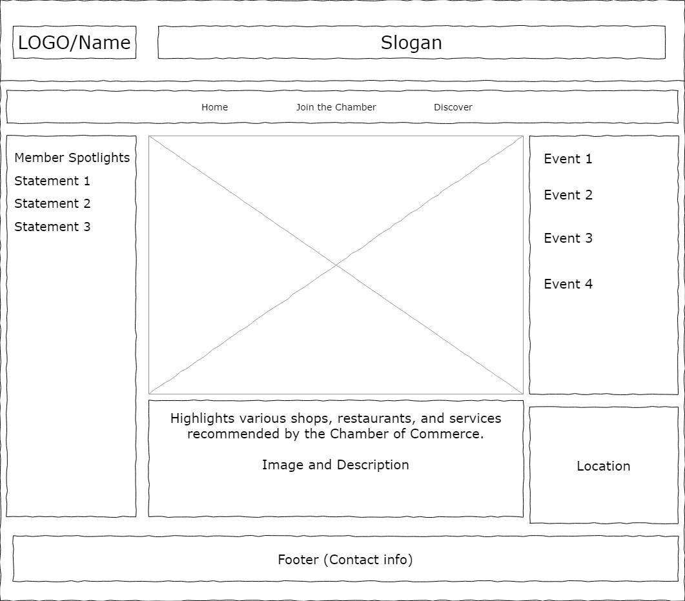

Chamber Site Plan
Site Name
Campos do Jordão Chamber of Commerce
Site Purpose
Step into the beating heart of Campos do Jordão's economic vitality through the digital gateway of our Chamber of Commerce. Our purpose is to create opportunity, curators of collaboration, and champions of the distinctive spirit that defines our local business community.
Scenarios
- Scenario 1: A tourist in Campos do Jordão wants to explore local businesses. They use the website's interactive map, which highlights various shops, restaurants, and services recommended by the Chamber of Commerce.
- Scenario 2: The proprietor of a hotel is eager to enhance tourist appeal for their business. The website serves as a platform to showcase an up-to-date list of upcoming events and their respective locations. This aids the hotel owner in curating a compelling itinerary to attract more visitors to their establishment.
- Scenario 3: A startup is in search of the ideal location to establish its office. They visit the website to look for other members and see their feedback
Color Schema
Main color: #ab191a
Background color: #ffffff
Typography
Montserrat Font
WireFrame
